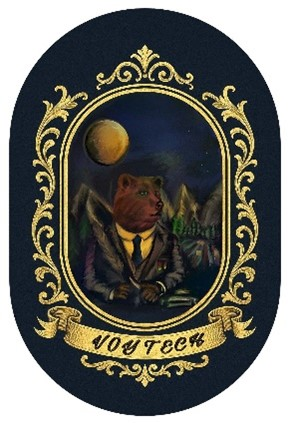

About Team VoyTech
Origin logo and teamname
Name:
Our team’s name: Team Voytech is derived from the bear Wojtek: a bear that fought in the second world war. Next to that, the furthest satellite in space is called voyager 1. And finally, our Cansat is going on a voyage, reaching an altitude of 900-1000 meter! There is not as much depth to the second part of our logo: "Tech". We thought that Tech fits the CanSat competition because of the many technological components of the competition. We also thought it sounds good.
Logo:
Our logo, off course has bear Woytech with his Medaille’s, but theres more. The suit represents Bertrand Russel, the name of our school. The mountains represent member: Laurens van den Berg (from the mountain), the knife represents team member Twan Snijders (cutting), the field represents Rik van den Akker (from the field) and the wood represents Lars Balk (beam). And last, in the stars you can spot the pattern of the big bear. We think having meaning behind the logo is a good addition, because it shows that we have really thought about the choice in logo and teamname.
Here you can see the logo and all the details in it:

Our team members
Here you can see some information about each member of the team:
Laurens van den Berg
- 16 years old
- Lives in Krommenie
- Specialized in communication
Hello, I’m Laurens van den Berg, I am 16 years old and I live in Krommenie. In my spare time, I like to be active, so I play basketball and tennis frequently. In this project I am responsible for the communication, so I do most of the writing, the outreach program and the finances.
Twan Snijders
- 16 years old
- Lives in Assendelft
- Specialized in design
Hello, I’m Twan Snijders, I am 16 years old and I live in Assendelft. If I’m not at school, I’m probably sporting. I play water polo and football, but I also play the piano. My function in this project is designing, printing and preparing the outer shell, but also the layout inside of the Cansat.
Lars Balk
- 17 years old
- Lives in Assendelft
- specialized in soldering
Hello, I’m Lars, I am 17 years old and I live in Assendelft. I like to play football and go to the gym, but school is also very important for me. In this project, I will be soldering all the parts and I will help assembling the Cansat.
Rik van den Akker
- 16 years old
- Lives in Assendelft
- specialized in coding
Hello I’m Rik, I am 16 years old and I live in Assendelft, next to school, I like to game, play badminton and code. Currently, I am busy following Harvard's CS50 introduction into programming online. In this project, I am responsible for the programming and wiring all the parts. I can give commands and recommendations to Lars and Twan when I want something to be soldered or incorporated in the design.
We are looking for sponsers to support our project, if you would like to sponsor us, you can contact us at VoytechBRC@outlook.com